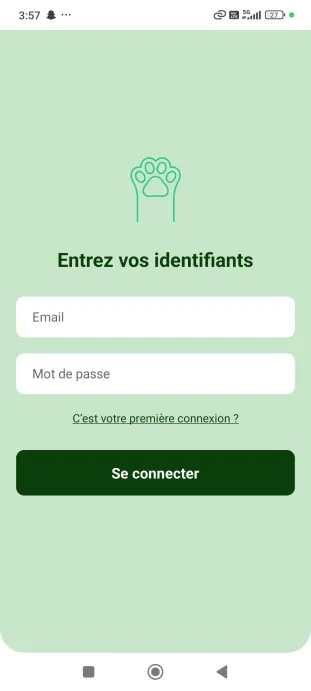

Captures d'écran

(Ajoute tes vraies captures dans assets/img/)
Créer une application mobile permettant d'identifier des espèces animales à partir de photos d'empreintes, en utilisant un modèle de vision par ordinateur (YOLOv8).
(Ajoute tes vraies captures dans assets/img/)
Le modèle atteint une précision élevée sur les données labellisées. Projet réalisé en équipe, avec conteneurisation complète pour déploiement facile. Apprentissage clé : intégration IA dans une app mobile réelle.